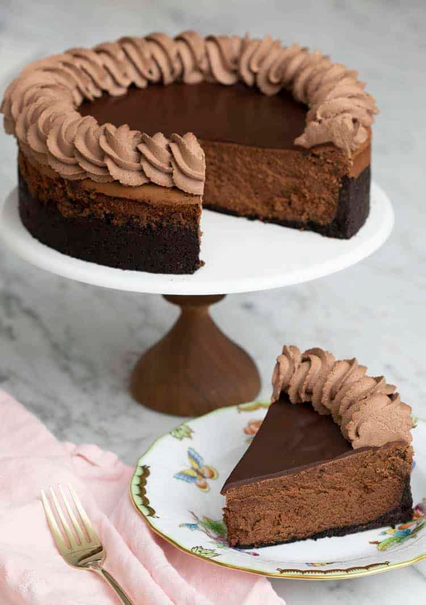

Chocolate Cheesecake

Description
Ingredients
- For the Crust:
- 24 Chocolate sandwich cookies (more if you'd like a thicker crust)
- 5 tbsp unsalted butter (g, melted)
- For the Chocolate Cheesecake:
- 1/4 cup coffee (hot)
- 1 cup bittersweet chocolate
- 3/4 cup semisweet chocolate
- 24 oz cream cheese (608g, room temperature)
- 1 pinch salt
- 1 cup sugar (200g)
- 1/4 cup sour cream
- 1 tbsp vanilla extract (15mL)
- 4 eggs (large, room temperature)
- 3 tbsp All purpose flour
- For the Ganache:
- 1/3 cup semisweet chocolate
- 1/3 cup cream
- For the Chocolate Whipped Cream:
- 2 cups heavy cream
- 1/4 cup powdered sugar
- 2 tsp vanilla extract
- 3 tbsp cocoa powder (plus more if needed)
Steps
- For the Crust:
- Preheat oven to 350F
- Add chocolate sandwich cookies to your food processor and pulse until broken into small pieces. Pour in melted butter while pulsing processor. Remove blades and use a spatula to mix butter in completely. See post above for instructions on making this without a processor or stand mixer
- Transfer mixture to your springform pan and spread our with a spatula so the crumbs are evenly distributed on the bottom and toward the side as well. Press into a flat layer using a tall glass and really try to compact the side to it keeps it's shape after cutting. Your crust can be a flat layer or have a bit of a side to it but does not need to go all the way to the top of the pan. Bake for about 10 minutes at 350, or until fragrant and a darker golden color. Remove from oven, set aside. Reduce oven temperature to 325F
- For the Filling:
- Place chocolate chips in a bowl then pour the hot coffee over them. Mix a bit then microwave in a few 20 second intervals as needed, stirring in between. Once almost all of the chocolate is melted cover and set aside, the residual heat should melt the remaining chocolate while you make the batter. I used a combination if semi sweet and bittersweet but you can use the chocolate you like best for this recipe
- Add ROOM TEMPERATURE cream cheese to stand mixer fitted with a paddle attachment and mix at medium speed to cream
- Add the sugar and the salt to the bowl and mix on medium until creamy. Scrape bowl down and mix until completely homogenous
- Add sour cream and vanilla extract, mix well then add the eggs and yolks one at a time, allowing each to incorporate before adding the next. Sprinkle in the flour and continue to mix. Scrape the bowl down and mix until completely smooth
- Pour in the melted chocolate and mix on low until combined. Scrape the bowl down and mix once more
- Pour the batter into the prepared 8 or 9 inch springform pan. The batter will not rise much at all during this low and slow bake so you can fill it up almost to the top
- Place springform pan into a large roasting pan or on a baking sheet (this makes sure there are no leaks and it's easier to remover from the oven
- Bake at 325F for 20 minutes then reduce temperature to 300F and bake another 30 minutes or until cake's edge is set but center is still wobbly. Turn oven off but leave door closed and allow cake to rest for an additional hour in the oven. Remove from oven and cool to room temperature then cover with a towel or paper towel and chill overnight. You can enjoy the cheesecake after a few hours of chilling but it's MUCH easier to cut if you've chilled it overnight
- For the Ganache:
- Melt the chocolate and cream in a small bowl. You can use a double boiler, microwave or heat the cream before mixing in
- Spread the ganache onto the cake and return to refrigerator to chill while you make the chocolate whipped cream
- For the Chocolate Whipped Cream
- Add the cold cream, vanilla extract, and powdered sugar to the bowl of your stand mixer. Sift in the cocoa powder then mix with a whisk attachment until semi-stiff peaks from
- Transfer whipped cream to a piping bag fitted with a star attachment and pipe onto the cake's edge using small circular motions